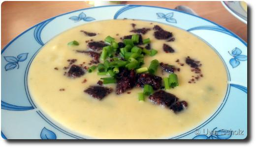

Kartoffeleintopf mit Pumpernickel-Croûtons
Diesen Eintopf gab es am vergangenen Pfingstwochenende bei uns, und ich fand ihn ziemlich lecker(*), dabei auch recht einfach zuzubereiten.
Man nehme also für vier Portionen:
600g Kartoffeln (mehlig-kochend)
600ml Gemüsebrühe (instant)
250g fettreduzierter Kochsahne
400g tiefgekühlte Gemüsemischung (z.B. mit Erbsen, grünen Bohnen, Möhren, etc....)
Salz, Pfeffer
geriebene Muskatnuss
100g Pumpernickel in Scheiben
1 EL Butter
1-2 EL Puderzucker
1 Bund Schnittlauch
Kartoffeln schälen, waschen, würfeln. Brühe aufkochen, Kartoffeln, Kochsahne und tiefgekühlte Gemüsemischung dazugeben. Ca. 20 Minuten bei kleiner Hitze köcheln lassen. Ein Drittel beiseitestellen, den Rest pürieren, dann Gemüse wieder dazugeben. Mit Salz, Pfeffer und Muskatnuss würzen.
Inzwischen Pumpernickel 1cm groß würfeln. Butter in einer Pfanne erhitzen, Pumpernickelwürfel darin kurz anbraten, mit Puderzucker bestäuben und weiterbraten. Schnittlauch in Ringe schneiden. Eintopf zum Servieren mit Schnittlauch und Croûtons bestreuen.
Wenn gewünscht dann kann man noch vier Wiener Würstchen klein schneiden und nach Schritt (A) zum Eintopf hinzugeben.
(*) Es gibt Stimmen, die das wegen der Möhren im Eintopf verneinen. 😉
